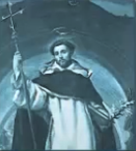

contact@st-dominic-f.org
contact@st-dominic-f.org
The Saint Dominic Foundation
"ecce non est abbreviata manus Domini, ut salvare nequeat, neque aggravata est auris ejus, ut non exaudiat" Isaias 59:1



Saint Dominic
Born Domingo de Guzman around 1170 in the village Caleruega in Castile, Spain, at the age of 14 he entered the University of Palencia, where he studied theology and philosophy. Known for his generosity, he sold all his possessions to aid the poor during a famine. He became Canon of the Osma Cathedral in Castile and effectuated ecclesiastical reforms on the local level. He accompanied his superior Diègue, Bishop of Osma, on a religious mission to Rome in 1203; on the return trip back to Spain, he was shocked by abuses of the clergy and the importance taken on by the Albigensian heresy while passing through Languedoc in Southern France. He took note of Albigensianism’s success with the local population, success which no doubt resulted from their mission and way of life. Two by two, they entered voluntary poverty and strove to preach by example. Dominic began to imitate them, ridding himself of all his earthly belongings. He walked the roads in utter destitution, carrying with him only those books necessary for services, study and theological debates and interpretations he led with the Albigensians.